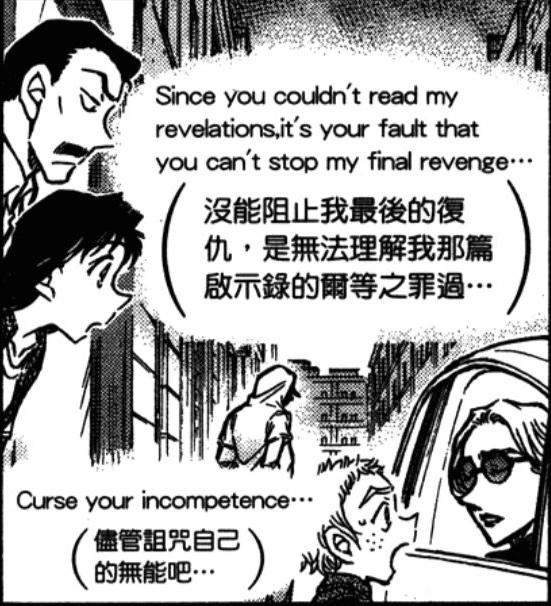
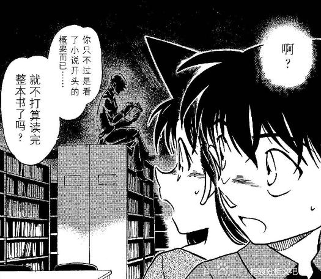
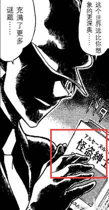

如图，这话是说给谁的？

应该是犯人对无法解密的人说的
青山對動畫組的復仇，暗諷製作組打亂小哀出場以及一直捧蘭姐的臭腳
说给乱改剧情的听，我要搞ca，你们偏要搞sr，那我就在这里埋雷，一群傻瓜发现不了了吧，看我之后引爆它，哈
如果放以前，我一定覺得是過度解讀
自從蘭蘭不會上車報警，爸爸被紅蓮骷髏吃掉後，我覺得不好說了
自從蘭蘭不會上車報警，爸爸被紅蓮骷髏吃掉後，我覺得不好說了
我认为无面的描写本身可以视为作者的嘴替。
无面隐藏了角色的特征，属性，只留下一张嘴讲两句，让人“不确定此时的角色到底是谁。”
读者需要结合接下来的剧情才能理解“此时”的角色，但角色“此时”毫无疑问是无属性的。
同样的用法在新一的少年事件簿中也有使用。
格子①就特别像是作者在借用角色之口和读者对话，
在短暂的嘴替之后，在格子②中通过书的标题来暗示角色身份，同时回归剧情人物的定位。
无面隐藏了角色的特征，属性，只留下一张嘴讲两句，让人“不确定此时的角色到底是谁。”
读者需要结合接下来的剧情才能理解“此时”的角色，但角色“此时”毫无疑问是无属性的。
同样的用法在新一的少年事件簿中也有使用。
格子①就特别像是作者在借用角色之口和读者对话，
在短暂的嘴替之后，在格子②中通过书的标题来暗示角色身份，同时回归剧情人物的定位。


2023-11-24 01:26 | 杠杠的鲜肉:歪个楼，大佬啥时候更新

动画组你们这群菜逼，看不懂我要的cp，还一直画你们的cp，等着被喷吧，ruozhi，dinenger，小丑们。
看了栗子直播，我发现南英竟然是悲观柯哀党
2023-11-24 04:19 | IV_Panzer:毕竟有满月篇结尾来了个喜当妹前车之鉴，一下停了好多年，现在看更多是73驾驭不了剧情发展来了个急刹车烂活，十几年前因为这情节大家认为毛利兰是亲女儿，以后也不知道拆SR速度咋样，自然悲观了2023-11-24 04:21 | IV_Panzer:我记得最清楚的十几年前一笑话是琴酒在高速上开车也能被逆行的毛利兰创死